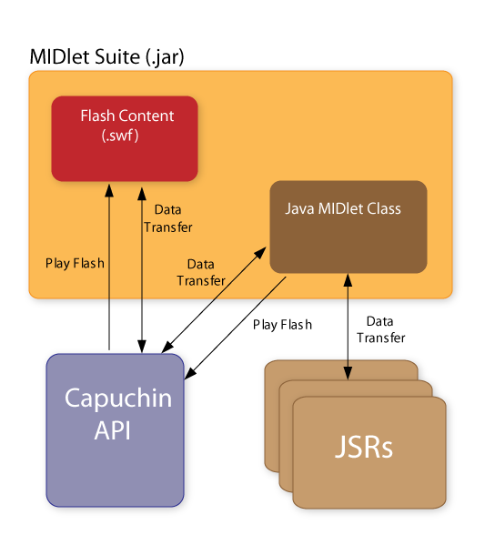

|
|||||||||
| PREV PACKAGE NEXT PACKAGE | FRAMES NO FRAMES | ||||||||
See:
Description
| Interface Summary | |
|---|---|
| ExternalResourceHandler | This interface is used to load external resources that are referenced within the Flash content. |
| FlashDataRequestListener | This interface should be implemented for receiving data requests from Flash. |
| FlashEventManager | This interface should be implemented for registering events listeners defined by Flash. |
| Class Summary | |
|---|---|
| FlashCanvas | This class represents a Canvas associated with a FlashImage. |
| FlashDataRequest | This class represents a data request originated from Flash. |
| FlashEventListener | This class is used for dispatching custom events to Flash. |
| FlashImage | This class represents an instance of the Flash engine associated with some Flash content(.swf). |
| FlashPlayer | This class is used for playing the Flash content. |
Project Capuchin provides an API that defines a bridge between Java ME and Adobe Flash Lite technologies.
The Project Capuchin API is the base for applications where the user interface is designed in Flash Lite while the data logic is provided by Java code. Data transmission is enabled in both ways, from Java ME to Flash Lite and vise versa.
The Project Capuchin API enables faster UI development and easier collaboration between graphic designers and code developers. Once all interfaces between the presentation and service layers have been defined, UI designers can develop and test the presentation layer in the Flash environment independent of the Java service layer development and testing.
The Project Capuchin API exposes all services available in Java ME to Flash Lite in a secured manner. It also improves Flash Lite distribution and installation by embedding Flash Lite content as a resource in MIDlet suites (.jar).
| Date |
Version |
Description |
|---|---|---|
16-July-2008 |
Initial Draft |
Based on previous internal implementation |
The following diagram describes the Capuchin Architectural Model.

Capuchin Architectural Model
System properties are typically used to query system-level properties such as API version supported by the underlying implementations by using the method System.getProperty(String key). The following system properties are required to be supported by Project Capuchin implementations to ensure interoperability among applications.
| Key |
Description |
|---|---|
com.sonyericsson.capuchin.version |
The String returned designates the version of the Capuchin Project API specification that is implemented. It is "1.0" for this version of the specification. |
com.sonyericsson.capuchin.flash.version |
The String returned indicates the version of Flash Lite that is supported by the underlying implementation. |
Example where FlashImage is created from a MIDlet resource and the FlashPlayer and FlashCanvas are used for displaying the content:
The FlashImage is created by providing an InputStream to the constructor. This makes it possible to embed the Flash content (Clock.swf) in a MIDlet Suite (.jar) file and access it as a resource.// Import the classes
import com.sonyericsson.capuchin.FlashImage; import com.sonyericsson.capuchin.FlashPlayer; import com.sonyericsson.capuchin.FlashCanvas;// Declare the variables
private FlashPlayer flashPlayer; private FlashImage flashImage; private FlashCanvas flashCanvas;
...When the MIDlet is started the first time, the startApp() method is called and the Flash content is being displayed:try { InputStream is = getClass().getResourceAsStream("/Clock.swf"); flashImage = FlashImage.createImage(is, null); //Use default resource handler flashCanvas = new FlashCanvas(flashImage); flashPlayer = FlashPlayer.createFlashPlayer(flashImage,flashCanvas); flashCanvas.setFullScreenMode(true); } catch (Exception e) { e.printStackTrace(); } ...
protected void startApp()
{
display = Display.getDisplay (this);
if (flashPlayer != null)
{
display.setCurrent(flashPlayer.getDisplayable());
};
};
The Project Capuchin API does not define any security mechanism. Rather, implementations of this API are subject to the security mechanisms provided by the underlying profile and configuration.
|
|||||||||
| PREV PACKAGE NEXT PACKAGE | FRAMES NO FRAMES | ||||||||